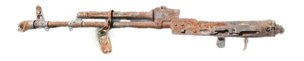
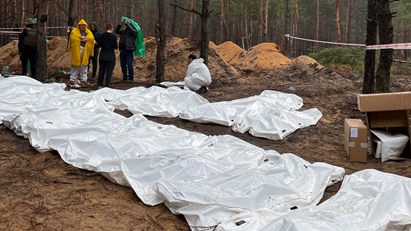
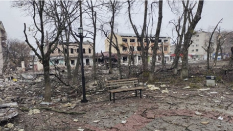

«Będziemy walczyć dopóki jesteśmy żywi. A kiedy nas nie będzie to będą walczyć inne.»

Ten Karabinek AK-74, ukraińska 25-ta siczeslawska brygada zabrała po odbiciu miasta Izium, w które Rosjanie okupowali ponad pół roku.
Ten okres dla miasteczka był najokropniejszy od czasów 2 wojny światowej: katowani i mordowani cywile, całkiem zniszczone lub częściowo zrujnowane budynki i całkowity zakaz wszystkiego co ukraińskie. To właśnie przyniósł z sobą w kiedyś szczęśliwe i spokojne miasto «rosyjski pokój».

Ekshumacja ciał z miejsca masowego pochówka pod Iziumem. Było odnaleziono 447 ciał, wśród których byli także kobiety i dzieci. Zdjęcie “Suspilne”.
Izium w momencie odbijania był najbardziej bombardowanym miastem w Ukrainie. Rosjanie bombardowali to miasto nawet wtedy, kiedy znajdowało się pod jej zwierzchnictwem.
Zdjęcie ze strony Facebook Ministerstwa obrony Ukrainy. Skutki bombardowań Iziumu